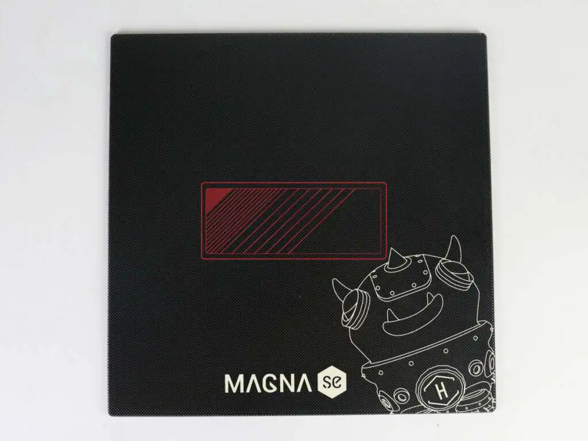
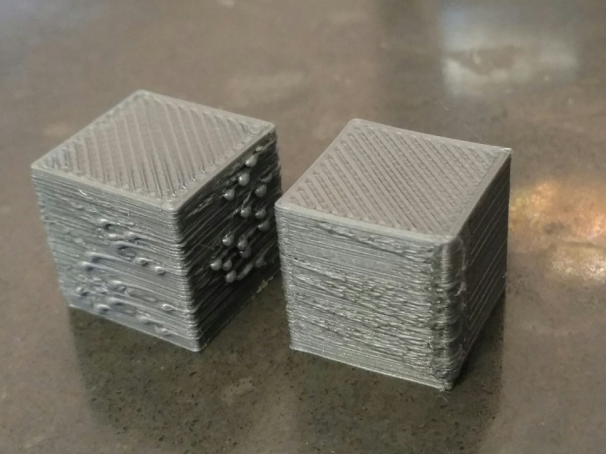
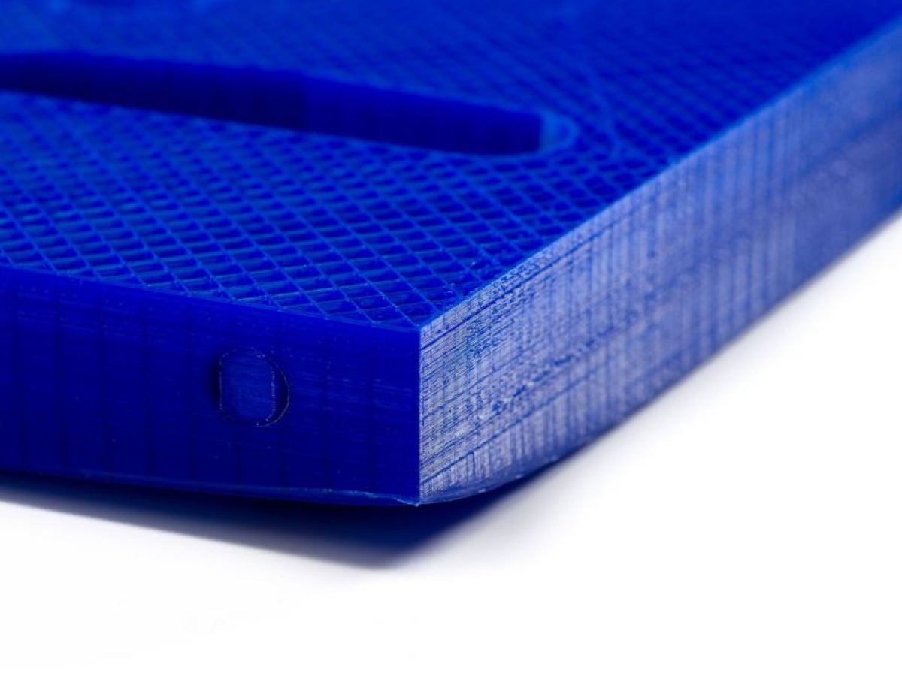

El extrusor no saca plástico al comenzar la impresión Algunas impresoras, cuando están en reposo a la espera de comenzar la impresión, extruye plástico por el nozzle debido a una temperatura excesiva del hotend. Esto provoca que en los primeros segundos de impresión no salga plástico.
Pocas capas en la parte superior Comprobar el número de capas superiores sólidas que se han configurado y qué relleno hemos establecido durante la impresión de la pieza. Ejemplo: si se ha establecido un relleno del 5% y dos capas superiores sólidas, seguramente aparezcan huecos como en la imagen.
Extrusión de mucho plástico Cuando se imprimen piezas puede darse el caso de que se extruya más plástico de lo debido, algunas impresoras no disponen de mecanismos para controlar el flujo de plástico.
Diámetro incorrecto del filamento Lo primero que hay que comprobar es que se le ha indicado al software el diámetro correcto del filamento que se está imprimiendo. Se puede comprobar con un calibre qué diámetro tiene el filamento exactamente.
El nozzle está separado de la cama caliente Una vez que la cama está correctamente nivelada, hay que determinar la altura adecuada del Nozzle con respecto a la misma
